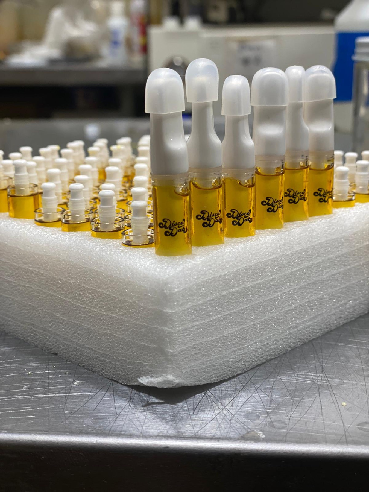
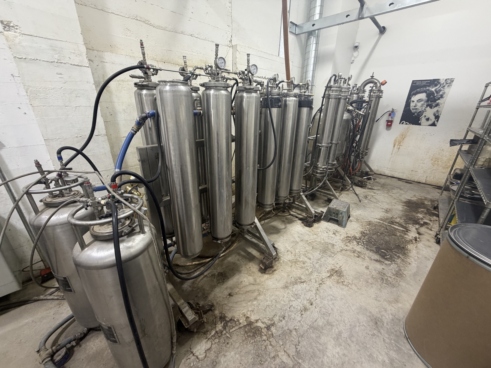

Operating experience
Work in the Field
Real facilities, grow rooms, equipment, and production environments shape the way ExtractOS designs systems for operators.
Talk with OwenField notes
A rotating look at the operating environments behind the work.

Selected work from the field
Facilities, grow rooms, equipment, and production environments from the operating experience behind ExtractOS.
What the photos show
Experience that connects the grow, the room, and the numbers.
Inputs matter. Cultivation choices, harvest timing, and material quality set the ceiling for extraction performance.
Rooms need rhythm. Equipment, cleaning, staffing, storage, and compliance have to support the actual production day.
Scale exposes systems. Mature operations need visibility, accountability, and repeatable decisions across the whole model.

Let's talk